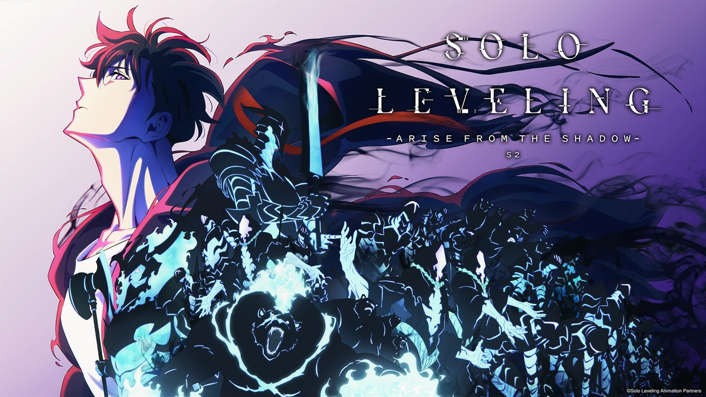

Solo Leveling deu início a sua segunda temporada!
Os dois primeiros episódios mergulham diretamente na tensão e na evolução do protagonista, Sung Jin-Woo. Após os eventos intensos da temporada anterior, Jin-Woo começa a enfrentar novas ameaças ainda mais perigosas enquanto descobre segredos sobre os Hunters e o mundo das dungeons.
A animação está ainda mais impressionante, trazendo batalhas épicas e um enredo que promete superar expectativas.
